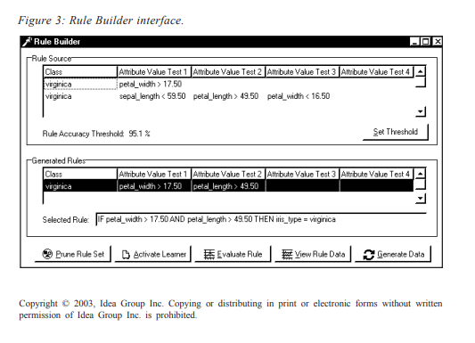

The data-items (inputs) of the class that is covered by the rule are displayed in color, while the data points of the complementary classes are displayed using round black dots. For example, in Figure 2, the data-items of Iris types Setosa and Versicolor are shown as round black dots. For the Virginica Irises, the data-items covered by Rule 1 are displayed as diamond-shaped yellow dots. The data-items of Virginicas that are not covered by Rule 1 are indicated through the use of red triangles. This information is used to assess the individual rule’s accuracy and coverage. By interacting in this way, the user can understand the data that underlies a particular rule constructed by the data mining tool. That is, a clearer understanding of the knowledge discovered by the various mining toolsthat coexist in the cooperative learning environment is obtained.
The user is also able to participate in the learning process by manually combining parts of the rules. The Rule Builder models an individual data mining tool’s participation during the cooperative learning phase, as discussed in earlier in the chapter. Note that the learning team operates in one of two modes:
The Rule Builder interface is shown in Figure 3. The top part of the interface displays the rules as generated by the active learner. The current rule accuracy threshold, which  is equal to the average rule accuracy, is displayed next. Here one will recall that this value is used to distinguish between high- and low-quality rules. The window also displays the newly generated rules. These rules are generated using the rule combination algorithm described earlier. In this way, the visualization helps the user to easily understand the various rules. For an expert user, the tool also provides an additional function allowing the user to add his own rules to the combined knowledge.
As has been indicated, the three components essential for understanding a visual model are high-quality representation, real-time interaction, and model and data integration. The current implementation of the ViziMine system thus addresses these three requirements through the real-time integration of both data visualization and data mining result visualization into one.
The next section discusses the use of three-dimensional visualization and virtual reality as a powerful tool for visualizing the data during the data preprocessing and mining processes.
Three-dimensional visualization has the potential to show far more information than two-dimensional visualization, while retaining its simplicity. Current and future research efforts will include the ability to model relationships between data in a three-dimensional rule grid. This visualization technique quickly reveals the quantity and relative strength of relationships between elements, helping to focus attention on important data entities and rules. It therefore aids both the data preprocessing and data mining processes.
Note that, although the data set and the data context determine the visualization technique, the size also plays a very important role. Unfortunately, the more data items on the visual graph, the more complex the graph becomes, and thus the user is faced with information overload or the so-called “curse of dimensionality.”
The next section contains general considerations on Virtual Reality (VR) and data mining, but most of the conclusions can be applied to the ViziMine tool as well. The ViziMine tool relies on bidimensional visualization, but the importance of each rule can be better visualized if three-dimensional visualization is utilized.
The curse of dimensionality is not restricted to data mining. This problem can arise in information retrieval, and Bayesian and multivariate analysis, to mention just a few. Many solutions have been designed, including the principal component analysis (or PCA). Under certain conditions, defined formally in Reinsel and Velu (1998), it is possible to drastically reduce the number of dimensions, while keeping most of the knowledge by performing a PCA on the data. The approach can be summarized as follows. The covariance matrix of the data is first computed, and then the corresponding Eigen values and vectors are evaluated. Because the covariance matrix is symmetric, the Eigen values and vectors can be easily calculated with a deterministic algorithm like the Jacobi method.
The amplitude of the Eigen values is representative of the importance of a particular dimension: the greater the value, the higher the importance. The corresponding Eigen vectors provide the basis that spans the subspace. It can be shown that the dimensions corresponding to the smallest Eigen values can be neglected. It can also be proved that the truncated Eigen decomposition is the decomposition that minimizes the quadratic error between the truncated decomposition and the real one.
The algorithm can be better understood by considering a bidimensional data distribution. Let us suppose that the data are distributed along a regression line. The Eigen vectors corresponding to this distribution are respectively oriented parallel and perpendicularly to the regression line; the biggest Eigen value corresponds to the Eigen vector oriented parallel to the regression line while the smallest Eigen value corresponds to the Eigen vector normal to the regression line. This particular case shows a fundamental limitation of the PCA method; i.e., in order to reduce the number of dimensions, the data must be correlated in the sense that a linear relationship must exist between them. Even if such a correlation is common in practice, that constraint constitutes an important limitation.
Many researchers have tried to overcome the limitation inherent in the linear relation by working on a generalization of the previous algorithm. A case of particular interest is the piecewise linear relation, which is an immediate generalization of the previous case. Instead of assuming a global linear relation, it is assumed that the domain can be divided into small domains to which a linear relationship applies. That means that the dimensions reduction is performed on a local basis and not on a global basis as in the previous case. More details about this method can be found in Chakrabarti and Menrotra (2000).
In addition to PCA, other methods like neural networks, clustorization, and latent semantic indexing can be utilized for dimension reduction. Clustorization allows representation of the data by a few archetypes corresponding to representative or typical data within the clusters. Neural networks reduce the data set to a limited number of classes. The classes can be determined in advance, as it is the case for a multilayer perceptron and radial basis neural networks, or determined by the network itself, as in the self-organizing Kohonen map.
Even if the number of dimensions can be reduced, it is well known that the number of remaining dimensions is much higher than three. Under these circumstances, it is legitimate to ask whether or not there is a clear advantage to increasing the number of dimensions from two to three. Doing so has many advantages. It is well known that complicated data sets are very difficult to visualize in two dimensions. There are many reasons for that. Let us look at three of them: the amount of information that can be displayed, the navigation through the data set, and the way data can be represented. Let us suppose that N information elements can be displayed in each dimension. If the data are displayed in two dimensions with a volumetric display, it is theoretically possible to display up to N2 information elements. If three dimensions are utilized, it is then possible to display up to N3 information elements simultaneously. In practice, the
number of displayed information elements is much lower, but this simple example illustrates the fact that an increase in the number of dimensions dramatically increases the bandwidth of the display system.
In visual data mining (Fayyad, Grinstein, & Wierse, 2001), the way data are looked at or the point of view from which they are considered is very important. A pattern that can be evident from a certain point of view might be very difficult to see from a different point of view. Consequently, it is very important that the analyst is able to navigate through the data in order to determine the best localization for his analysis. It is well known that bidimensional representations cannot take into account more that one point of view. Of course, it is always possible to reprocess the data in order to show them from a different point of view, but in practice that is not convenient. First, it can take a lot of time to reprocess the data. Such delays can greatly hamper the analysis process. Second, it is very difficult to determine the right point of view if one cannot navigate through the data in a non-stepwise manner.
The above-mentioned problems can be overcome by using an additional dimension. Three-dimensional data can be viewed from any point of view just by navigating through them. If the system is properly designed, the navigation can be done in realtime. The determination of the right point of view is much easier because the user can walk or fly though the data and look at them from any suitable direction. These systems can be implemented using a VRML browser, a virtual reality environment, or any suitable graphical system.
In order to represent the data, new multimedia alternatives are becoming available, including the X3D and MPEG-4 standards. X3D allows the analyst to define a graphical library adapted to the class of problem he is trying to solve. Not only is it possible to create templates, but also to define a grammar for a specific class of problems. Once the grammar has been defined, it can be reused transparently with various data sets. More details about X3D can be found at the Web3D Consortium web site (http:// www.web3d.com).
MPEG-4 is the first, if not the only, real multimedia format. It can transparently handle sound, images, videos, and 3-D objects, as well as events, synchronization, and scripting languages. MPEG-4 is specially adapted to represent very complex multimedia data sets and to facilitate the interaction between those data sets and the analysts. The data mining task could be further simplified by using MPEG-7. MPEG-7 is a multimedia description standard that can describe the content of any multimedia object. That means that MPEG-7 can provide the analyst with additional information. For a video, this information could be the duration, the title, and a trailer. Even if the MPEG-4 and MPEG7 standards look very promising, it is too early to draw a conclusion about their usefulness in data mining. More details about MPEG-4 and MPEG-7 can be found at http:/ /mpeg.telecomitalialab.com.
In two dimensions, data representation is limited to bidimensional graphical ele-ments. In three dimensions, both two- and three-dimensional graphical elements can be utilized. These elements are much more numerous and diversified in three dimensions than in two. Furthermore, three-dimensional representations can be either volumetric or surface-based depending on whether the internal structure is of interest or not. A surface-based representation only takes into account the outer appearance or the shell of the object, while a volumetric approach assigns a value to each volume element. The latter approach is quite common in biomedical imagery like CAT scanning.
Many techniques are available to visualize data in three dimensions (Harris, 2000). Let us review a few of them. It is very common to represent data by glyphs (Hoffman & Grinstein, 2001; Fayyad, Grinstein, & Wierse, 2001). A glyph can be defined as a threedimensional object suitable for representing data or subsets of data. The object is chosen in order to facilitate both the visualization and the data mining process. The glyph must be self-explanatory and unambiguous. Glyphs can have various attributes like their color and scale. Even if most glyphs are rigid objects, non-rigid and articulated objects can be used as well. It is then possible to use the deformation and the pose of the glyph to represent some specific behavior of the data set. Furthermore, glyphs can be animated in order to model some dynamic process. A scene is defined as the set of all glyphs and their surroundings, as explained by the following example.
Assume that the original data come from a furniture store. The data concern a data mining effort initiated by the Orders Department. The aim of data mining is to determine the purchase patterns of customers indicating the popularity of items, e.g., of sofas. In this example, each sold category is represented by a glyph in the virtual scene. The color of the glyph represents the warehouse stock status: a warm color means that the item is a back order, a cold color means that the item is being overproduced, and a gray color corresponds to a normal inventory. The relative sizes indicate the current sales status. For example, a small sofa would indicate that the sales are too low, while a big sofa would indicate that the sofas are selling well on the market. If the sofa is much bigger than anything else, it means that the sales are unbalanced. The position of the glyphs in the virtual scene is related to the localization of the corresponding items in the store. From an analysis of the localization, it is possible to determine the disposition that maximizes the sales. In addition to the geometrical content, aural attributes can be added to the scene as well (Begault, 1994). These attributes can be utilized to attract the analyst’s attention to some particular characteristics of the data or to bias the data mining process in a certain way. The sounds can signal points of interest or can be voice recordings of a previous analysis. When used in a moderate way, aural attributes do not interfere with the visual content and can provide additional information about the data. The overall efficiency of aural attributes can be enhanced if they are spatialized, i.e., they can only be heard at certain locations and within a certain spatial range. The scene can be illuminated in various ways. Depending on the angle of incidence, the number of luminaires, and their nature, it is possible to enhance or hide various aspects of the data. If many analysts are simultaneously working on the data set, the lighting can be used to help them to better visualize their mutual understanding of the data by enhancing features or patterns related to their respective understanding of the situation. The